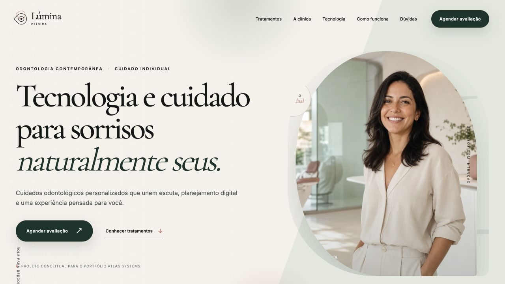

Automação inteligente · Sistemas personalizados
Sistemas que movem negócios.
Criamos automações com inteligência artificial, sistemas personalizados, landing pages e bots inteligentes para transformar operações em negócios mais eficientes, escaláveis e lucrativos.
Mais eficiência. Mais escala. Mais resultado.
- Redução de custos
- Mais produtividade
- Processos automatizados
- Operações escaláveis
- Atendimento inteligente
- Crescimento sustentável
Soluções digitais
Tecnologia aplicada aos desafios reais do seu negócio.
Cada solução nasce de um problema concreto e é construída para aumentar eficiência, produtividade, conversão e capacidade de crescimento.
Impactos que orientam nossas soluções
- Custos operacionais
- Reduzidos
- Produtividade
- Elevada
- Processos críticos
- Automatizados
- Operações
- Escaláveis
O que podemos oferecer
Serviços
Do diagnóstico à implementação, combinamos estratégia, design e engenharia para resolver gargalos reais e gerar resultados mensuráveis.
Ideal para
Operações com tarefas manuais, dados duplicados ou atendimento lento que precisam ganhar velocidade, precisão e escala.
- Menos retrabalho e erros
- Mais produtividade e rastreabilidade
Principais entregáveis
Próximo passo
Workshop de diagnóstico + mapa de automação
Falar com especialista
Ideal para
Campanhas, lançamentos e empresas que recebem tráfego, mas precisam transformar mais visitantes em leads ou vendas mensuráveis.
- Jornada de conversão objetiva
- Resultados acompanhados por dados
Principais entregáveis
Próximo passoBriefing de conversão + plano da páginaFalar com especialista
Ideal para
Empresas limitadas por planilhas, ferramentas fragmentadas ou processos que não cabem em softwares prontos.
- Operação centralizada e visível
- Base segura para crescer
Principais entregáveis
Próximo passoDiscovery técnico + arquitetura inicialFalar com especialista
Ideal para
Times com alto volume de perguntas repetitivas, demora na primeira resposta ou perda de oportunidades fora do horário comercial.
- Primeira resposta 24 horas
- Atendimento padronizado e escalável
Principais entregáveis
Próximo passoMapeamento do atendimento + desenho do fluxoFalar com especialista
Como trabalhamos
Clareza do diagnóstico à evolução contínua.
Nosso processo garante qualidade, eficiência e alinhamento com os objetivos reais do seu negócio.
Diagnóstico
Entendemos os desafios, objetivos e oportunidades da sua operação.
Por que escolher a Atlas
Tecnologia como meio. Crescimento como resultado.
Cada solução começa pelo resultado que o negócio precisa alcançar — nunca pela tecnologia da moda.
Trabalhamos lado a lado com sua empresa para entender prioridades, simplificar decisões e construir o que realmente gera valor.
Criamos bases sólidas, rápidas e evolutivas para sua operação crescer sem transformar tecnologia em um novo gargalo.
Sobre a Atlas
Transformamos negócios em operações preparadas para o futuro.
A Atlas é especializada no desenvolvimento de soluções digitais avançadas, com foco em automação inteligente, sistemas personalizados e experiências orientadas a resultados.
Mais do que desenvolver ferramentas, criamos soluções que impactam diretamente o crescimento, a produtividade e a lucratividade dos nossos clientes.
O que guia cada decisão.
Missão
Ajudar empresas a crescer através da tecnologia, tornando processos mais inteligentes, eficientes e escaláveis.
Visão
Ser referência em automação e soluções digitais que transformam negócios e geram resultados reais.
Valores
Inovação constante, foco em resultados, compromisso com o cliente e qualidade em cada entrega.
Atitude
A Atlas é para empresas que não querem apenas acompanhar o futuro — querem liderar.
Resultados em movimento
O que muda quando a tecnologia trabalha a favor do negócio.
Soluções bem aplicadas liberam tempo, aumentam capacidade operacional e criam experiências melhores para clientes e equipes.
Eficiência operacional
Menos tarefas manuais. Mais tempo para decisões importantes.
Automação reduz retrabalho, diminui erros e libera a equipe para atividades de maior valor.
Falar com a AtlasCrescimento e escala
Uma operação preparada para crescer sem multiplicar o caos.
Sistemas personalizados organizam dados, padronizam processos e sustentam novas etapas de crescimento.
Falar com a AtlasExperiência do cliente
Respostas mais rápidas e jornadas que convertem melhor.
Bots e páginas estratégicas aproximam sua marca do cliente em todos os momentos da decisão.
Falar com a AtlasPronto para transformar sua operação?
Conte o desafio da sua empresa. A Atlas ajuda a transformar problemas operacionais em soluções digitais eficientes, escaláveis e orientadas a resultados.
Atendimento direto
Converse com a Atlas no WhatsApp.
Conte seu desafio diretamente para nossa equipe e descubra qual solução faz sentido para o seu negócio.
Resposta rápida
Atendimento humano
Sem formulário
WhatsApp da empresa
+55 11 93053-4679
Abrir conversa no WhatsApp
O WhatsApp será aberto em uma nova aba.